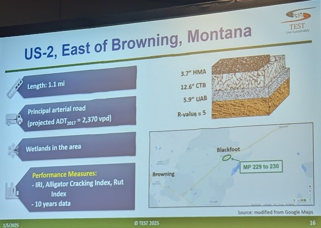
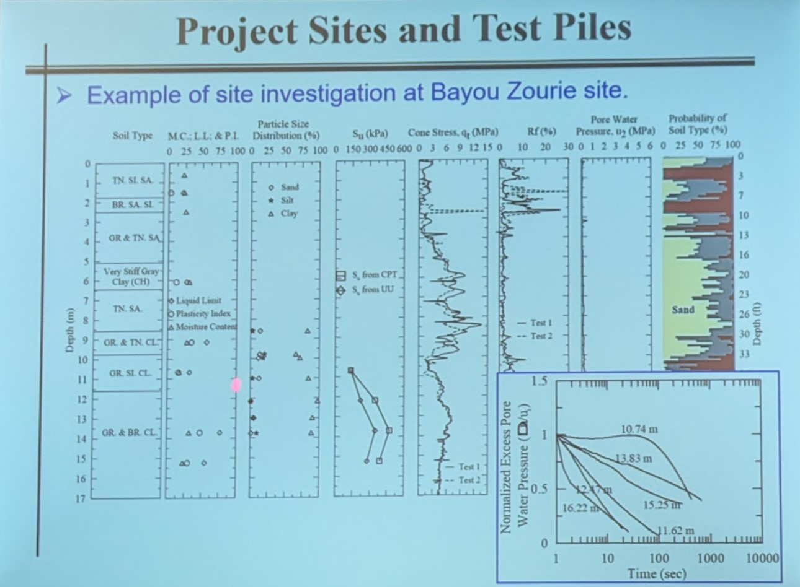
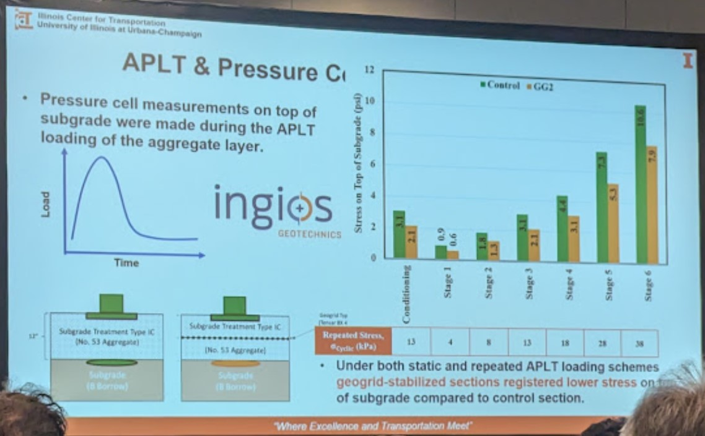
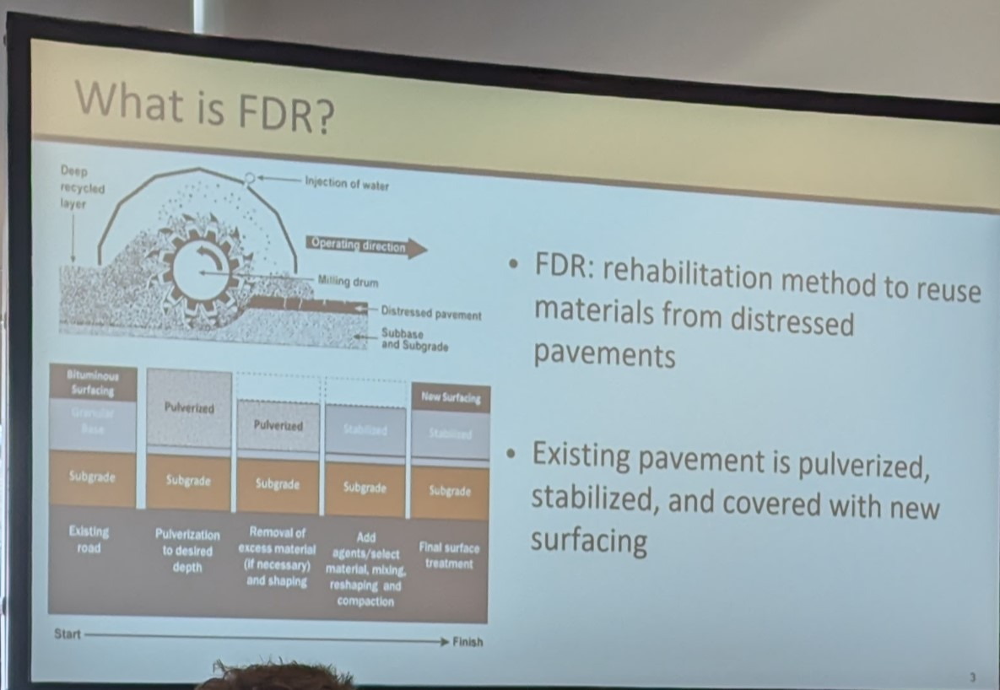
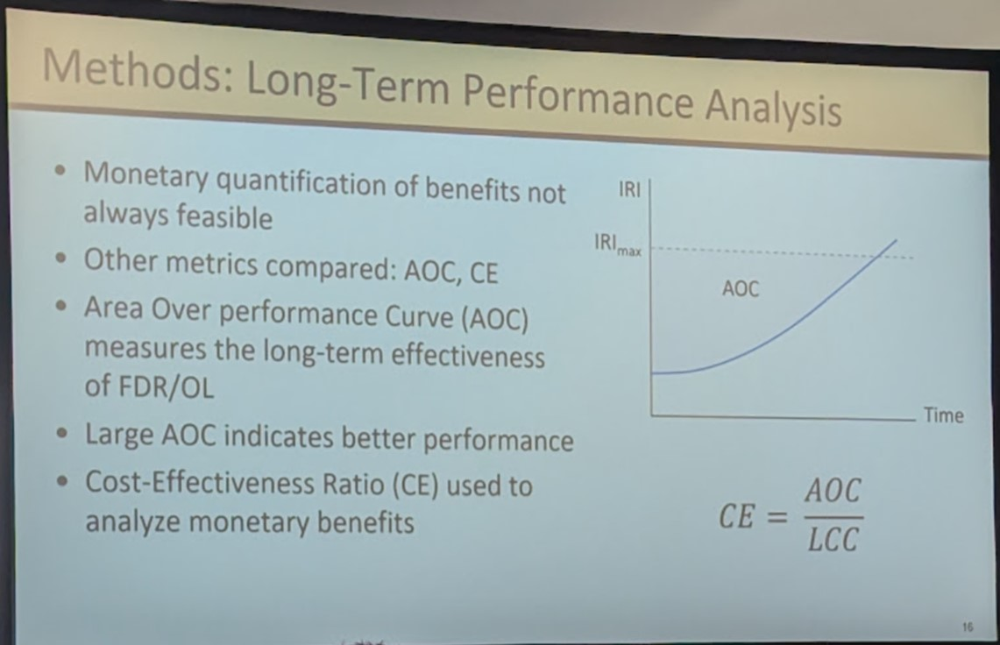
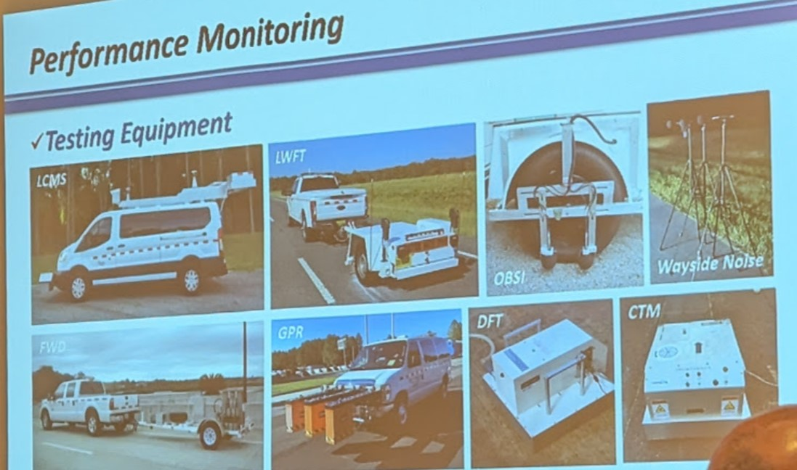

Takeaways from TRB 2025
January 15, 2025
Tags:
TRB
Civil
Pavement
Geotechnology
Back in November of 2024 I started as an engineer for the Kentucky Transportation Center (KTC).
As part of working here I was able to attend the Transportation Research Board (TRB) national
meeting that is held in Washington, DC. The TRB conference covers all modes of Transportation
and attracts thousands of transportation administrators, practitioners, policy makers, and
researchers.
As a first time attendee it was a little overwhelming due to the shear number of
possible presentations and posters to go see. As well as possible Committee and Sub Committee
meetings to attend. I ended up focusing on topics that covered highway infrastructure assets,
asphalt performance and condition evaluation, recycled material use in pavements,
ground improvement modeling and performance in roadways embankments, instrumentation of roadways
and soils and pile axial capacity modeling and instrumentation. Overall, it was a wonderful
experience that allowed me to get a sense of the state of practice in the transportation industry
and transportation agencies as well as current areas of research.
Key Take Aways
-
FHWA has on online portal of data, knowledge, analytical tools related to pavement, bridges
and materials. The portal is free to access.
infohighway.fhwa.dot.gov. I plan to dig deeper
into the data through this portal and hopefully get more familiar with the FHWA Long-Term Pavement
Performance (LTPP) data that is housed there. (Lecture 1019, Sunday 9 am)
-
Uniform support underneath concrete asphalt pavements is more critical to long-term
performance than the strength or stiffness of the foundation. (Lecture 1047, 1:30 pm)
(Resources: Guidance for improving
foundation layers to increase pavement performance on local roads.,
SUBGRADES AND SUBBASES FOR CONCRETE PAVEMENTS
)
-
Presentation on the use of Marine Electrical Resistivity Surveys to look at scours holes in
bridges was an interesting idea I had not seen before. Presentation by Andrew Gombac, Texas State University.
-
Learned about a new program at Western Kentucky University that presented presentation and posters
at TRB,
WKU Center for Transportation Research (CTR) Facility
that is run by Dr. Kirolos Haleem's. Looks to be very active.
-
Learned about asset management and life cycle cost analysis related to pavement. Very interesting presentations
given in lecture session 3075 Decision Making in Pavement Materials, Tuesday 10:15 am. Interesting application
of Monte Carlo Simulation and Markov Condition Modeling to estimate life-cycle costs for pavement performance.
- Probability Based Pavement Asset Management in Ireland, Mr. Ray McGowan, PMS Pavement Management Services Ltd.
- A Comparative Analysis of Full-Depth Reclamation and Overlay Pavements, Anneliese Crayton, University of Colorado
-
Pavement instrumentation subcommittee had some great presentations.
- FAA Experience with Embedded Sensors, Navneet Garg
- US-301 Concrete Test Road Florida Department of Transportation,
Website and
Video
 Looking forward to Next Year!
Looking forward to Next Year!
Favorite Slides

Like the Summary Info And The Pavement Image

Like the Display of Geotechnical Data

Shows the Benefit of Geogrid In Roadway Base Layers In Field Tests

Shows What Full Depth Rehabilitation is for Roadways

Long-Term Performance Analysis As AOC
Ireland's Pavement Maintenance and Modeling of Pavements

Pavement Performance Monitoring Tools